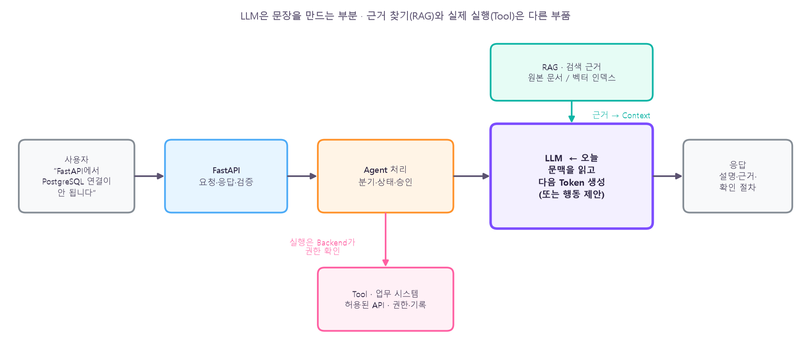
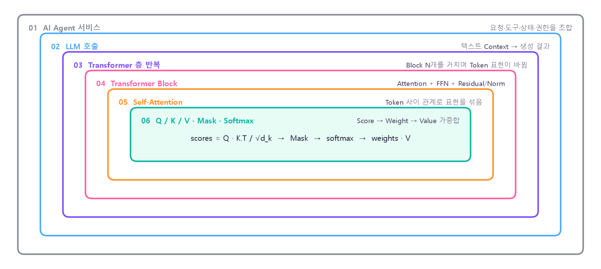
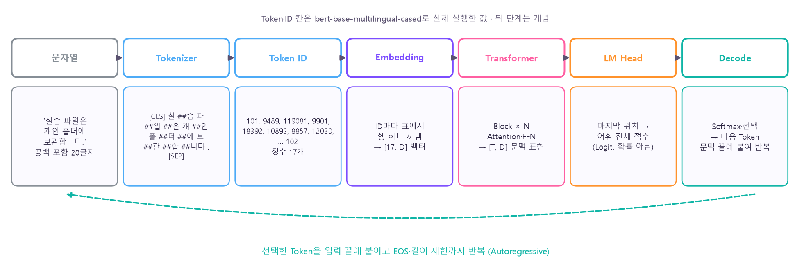
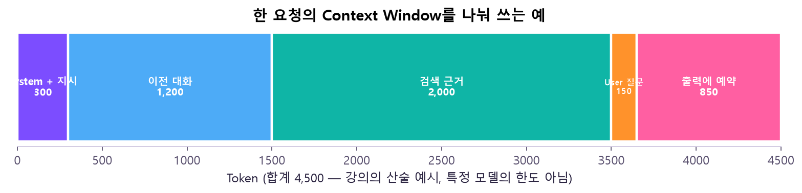
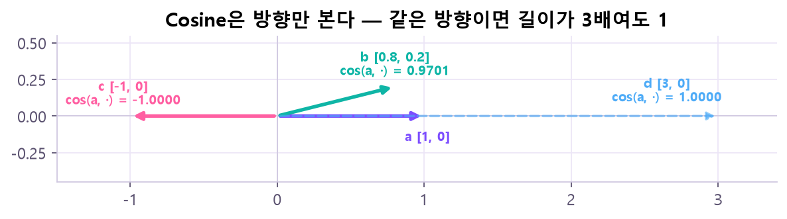
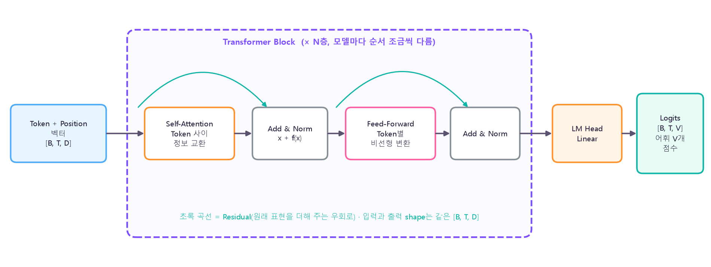
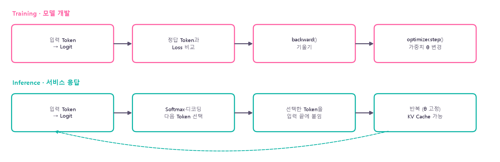

💡 오늘 코드는 모두 작은 Tensor라 CPU로 충분해요. Tokenizer·문장 모델은 처음 한 번 인터넷에서 내려받아요. 숫자 자체보다 shape · Mask · 입력과 출력의 의미를 보는 날이에요.
이거 어디에 써?
"FastAPI에서 PostgreSQL 연결이 안 됩니다." — 이런 문의에 AI 도우미가 증상 설명 · 근거 문서 · 확인 절차를 답하려면, 지난 3일에 만든 API·DB 위에 "문장을 읽고 만드는" 부품이 하나 더 필요해요. 그게 LLM이에요. 오늘은 그 부품의 안쪽을 열어 봐요.

무엇을 보나: AI 도우미 서비스 한 건의 흐름이에요. LLM(보라)은 문맥을 읽고 다음 Token을 만드는 부분이에요. 근거 문서는 RAG(초록)가 찾아 LLM 입력(Context)에 넣어 주고, 실제 시스템을 바꾸는 Tool(분홍) 실행은 Backend가 권한을 확인해요. 🤔 왜 나눠? LLM은 그럴듯한 문장을 만들 뿐, 문서를 찾거나 DB를 고칠 권한을 스스로 판단하지 못하니까요.
날짜
만든 것
역할
11/10 Day17
FastAPI /api/knowledge
서비스 입구
11/11 Day18
PostgreSQL 지식·분류 표
원본 지식 저장
11/12 Day19
API ↔ DB 연동
API 요청이 실제 행으로
11/13 오늘
LLM 원리
그 위에서 동작할 언어 모델 이해
이후
11/16 Prompt → 11/17 LLM API → 11/18 Embedding·Vector DB → 11/19 Chunking → 11/20 Basic RAG
검색·생성·도구

무엇을 보나: 오늘의 확대 지도예요. 바깥(서비스)에서 안쪽(Attention 계산 한 줄)으로 6단계 들어가요. 노트도 이 순서를 거꾸로 — 바깥 생태계(①)부터 안쪽 계산(⑤)까지 — 따라가요. ⚠️ Tokenizer는 이 상자들 밖이에요. 모델 입력을 준비하는 별도 단계라서요.
📋 명세 — 문장 하나가 다음 Token이 되기까지
오늘 다룬 단계들의 입력과 출력 약속을 한곳에 모았어요. shape는 명령어 사전에서 실제로 돌린 예(배치 B=2, Token T=5, feature D=8, 어휘 V=100)예요.

무엇을 보나: "실습 파일은 개인 폴더에 보관합니다."(공백 포함 20글자)를 실제 Tokenizer에 넣었더니 Token 17개(앞뒤 구분용 2개 포함)가 됐어요. 그 뒤로는 ID → 벡터 → 문맥 표현 → 어휘 전체 점수 → 하나 선택 → 문맥 끝에 붙여 다시(초록 점선). 🤔 왜 한 번에 문장 전체를 안 만들어? LLM은 "다음 Token 하나"의 점수만 계산하는 기계라서, 문장은 그걸 반복해서 만들어져요.
1. 단계별 입력 · 출력
단계
입력
출력
자료형 · shape 예
하지 않는 일
Tokenizer
문자열
Token 조각 · input_ids · attention_mask
정수 리스트 / (B, T)
의미 계산 (규칙대로 자르고 번호 찾기만)
Embedding
input_ids
Token 벡터
실수 (B, T, D) = (2, 5, 8)
문맥 반영 (같은 ID면 같은 벡터)
Transformer Block × N
Token 벡터 + 위치 정보
문맥 표현 (Hidden State)
(B, T, D) 그대로
shape 변경
LM Head
Hidden State
Logit (어휘 전체 점수)
(B, T, V) = (2, 5, 100)
확률 만들기 (음수도 됨)
Softmax
마지막 위치 Logit / temperature
확률 분포
(B, V) · 합 1
Token 고르기
Decode
확률 분포
다음 Token 하나
정수 ID
사실 확인
2. Mask 네 가지 — True·1의 뜻이 다르다
어디서
값
뜻
막는 것
Tokenizer attention_mask
1 / 0
1 = 본다 (실제 Token)
PAD
PyTorch src_key_padding_mask
True / False
True = 안 본다
PAD
직접 masked_fill(mask, -inf)
True / False
True = 가린다
미래 (Causal)
F.scaled_dot_product_attention(attn_mask=)
True / False
True = 본다
미래 또는 PAD
아래 두 줄은 실제로 돌려 확인했어요: Tokenizer의 attention_mask를 == 0으로 뒤집어 src_key_padding_mask에 줘야 PAD 값이 결과에 안 섞이고, SDPA에는 masked_fill용 Mask를 ~로 뒤집어 줘야 is_causal=True와 같아요.
3. 숫자 읽는 규칙
숫자
맞는 해석
틀린 해석
Token ID (예: 119081)
Vocabulary 안의 번호
클수록 중요한 단어
Token 수
Context·요금·속도의 단위
글자 수 · 단어 수와 같음
Logit
후보별 점수 (음수 가능)
확률 %
Attention Weight 행
그 Query가 각 Key를 참고한 비율 · 행 합 1
모델 판단의 유일한 이유
Cosine 유사도
두 벡터의 방향이 얼마나 같은가
답이 맞을 확률
① LLM 생태계 · 서비스 속 역할
용어
뜻
AI
언어·시각·판단 등 넓은 지능적 작업을 하는 기술 전체
생성형 AI
학습한 패턴으로 텍스트·이미지·음성 등을 만들어 내는 AI
Foundation Model
대규모로 미리 학습한 뒤 여러 작업(다운스트림)에 가져다 쓰는 모델
LLM
언어 Token 사이의 통계적 관계를 학습한 대규모 언어 모델 — 위 셋 안에 들어가는 부분집합
LLM이 하는 일은 결국 하나예요: 지금까지의 Token을 보고 다음 Token 후보마다 점수를 매기는 것. 고른 Token을 붙이고 또 점수를 매기고… 이걸 반복해 문장이 돼요(Autoregressive). ⚠️ 그래서 "유창한 출력"과 "사실 검증"은 다른 일이에요. 점수가 높은 Token이 자연스러운 Token일 뿐, 맞는 Token이라는 보장은 없어요.
모델 · Runtime · 서비스 · 데이터 · 운영은 다른 계층
계층
주요 구성
던질 질문
모델
Tokenizer · 가중치 · Transformer
무슨 입력을 어떤 표현으로 바꾸나?
Runtime
PyTorch · 추론 엔진
어디서 어떤 자원으로 실행하나?
서비스
FastAPI · 요청 · 응답
누가 어떻게 기능을 호출하나?
데이터
PostgreSQL · 문서 · Metadata
어떤 지식과 출처를 보관하나?
운영
권한 · 평가 · 로그 · 비용
어디까지 신뢰하고 통제하나?
🤔 모델만 설치하면 서비스가 되는 거 아냐? — 아니에요. 모델은 첫 줄 하나예요. 인증·근거·정확성은 아래 계층들이 따로 보장해야 해요. Day17~19에서 만든 API·DB가 바로 그 아래 계층이에요.
잘 맞는 일 vs 검증 없이는 위험한 일
활용하기 좋은 예
검증 없이는 위험한 예
FAQ 초안 작성 · 요약 · 분류
출처가 불명확한 정책·법률 답변
자유형 텍스트를 정해진 형식으로 바꾸기
실시간 운영 상태를 알고 있다는 주장
Python 코드 초안 · 설명 · 테스트 제안
승인 없이 DB를 수정·삭제하는 Agent
대화형 지식 탐색 보조
개인정보·비밀 정보를 그대로 전달
출력은 후보 답변이에요. 정확성·권한·출처 검증은 애플리케이션에서 설계해요.
대표적인 한계 네 가지
한계
무슨 일이 생기나
Hallucination
틀렸거나 근거 없는 내용을 그럴듯하게 만들어요
지식 시점
학습 이후의 변경이나 사내 문서는 자동으로 반영되지 않아요
Context · 비용
입력 길이 · 요금 · 응답 시간 · 장비 자원의 제약이 있어요
보안 · 권한
프롬프트만으로 권한 판단과 개인정보 보호가 완성되지 않아요
🤔 그럼 Day18~19에 만든 지식 DB는 왜 필요해? — "지식 시점" 한계 때문이에요. LLM이 모르는 최신·사내 지식을 검색해서 입력에 붙여 주면(Retriever → LLM) 그걸 근거로 답할 수 있어요. 이게 RAG예요. 단, DB가 있다고 자동으로 RAG가 되진 않아요 — 검색·입력 구성·출처 확인을 따로 만들어야 해요(11/20). 그리고 검색해서 붙이는 건 학습이 아니에요. 모델 가중치는 그대로예요.
② Tokenizer — 문자열이 정수 ID가 되기까지
Token은 언어 모델이 다루는 분할 단위예요. 띄어쓰기 단어와 같지 않아요. Tokenizer가 모델마다 정해진 규칙으로 문자열을 자르고, 각 조각을 Vocabulary(어휘 사전)에서 찾아 번호(Token ID)로 바꿔요.
tok = AutoTokenizer.from_pretrained("bert-base-multilingual-cased")
ids = tok("실습 파일은 개인 폴더에 보관합니다.")["input_ids"] # → 17개
실제로 돌려 보니 결과는 [CLS] 실 ##습 파 ##일 ##은 개 ##인 폴 ##더 ##에 보 ##관 ##합 ##니다 . [SEP] — 17개예요. 공백 포함 20글자, 띄어쓰기 단어 5개, Token 17개. 셋 다 다른 숫자예요. ##은 "앞 조각에 붙어 있던 것"이라는 표시(WordPiece 방식)라 되돌릴 때 다시 붙여요.
실제 결과: 긴 문장이 9 Token이라 [2, 9], 짧은 "AI"의 attention_mask는 [1, 1, 1, 0, 0, 0, 0, 0, 0]. max_length=12는 상한이지 목표 길이가 아니라서 12까지 채우지 않았어요(padding="max_length"를 줘야 12).
⚠️ 잘림은 조용히 일어나요.max_length=4로 바꿔 돌려 보니 두 번째 문장이 [CLS] Fast ##AP [SEP]가 됐어요 — "PostgreSQL"이 통째로 사라졌는데 오류는 없었어요. Truncation은 요약이 아니라 잘라 버리기예요. 긴 문서의 중요한 내용이 뒤에 있으면 그대로 빠져요.
Context Window — 한 요청에서 모델이 보는 Token 범위
Context Window에는 시스템 지시 · 질문 · 대화 이력 · 검색 근거 · 출력까지 전부 들어가요. 출력도 같은 예산을 나눠 써요.

무엇을 보나: 강의의 산술 예시(합계 4,500 Token)를 그린 거예요. 실제 모델의 한도나 요금이 아니에요. 검색 근거가 가장 큰 덩어리고, 답변을 쓸 자리(850)도 미리 남겨 둬야 해요. 🤔 그럼 많이 넣을수록 좋아? 아니에요. 너무 긴 문맥은 잡음이 되고, 잘리거나 중요한 근거를 놓치기도 해요. 그리고 Context Window는 영구 기억(Memory)이 아니에요 — 요청이 끝나면 사라져요.
Token 수를 세야 하는 이유
내용
계산량 · 지연
입력 길이와 생성 길이가 응답 시간에 영향
비용
API는 입력·출력 Token 단위 과금이 흔함
품질
너무 긴 문맥은 잡음 · 잘림 · 근거 누락을 부름
③ Embedding — 정수 ID를 계산 가능한 벡터로
Token ID는 그냥 번호라 더하거나 비교해도 의미가 없어요. 그래서 모델은 ID를 행 번호로 써서 Embedding 표(어휘 수 × D)에서 그 행의 벡터를 꺼내요. 이 벡터 값은 학습으로 정해지는 연속값이에요.
실제로 돌려 보니 [7, 3, 99, 3, 0]에서 두 번 나온 ID 3의 벡터가 완전히 같았어요(True). Embedding은 표에서 꺼내기라 위치를 모르거든요.
Position — 순서 정보가 따로 필요한 이유
"개가 사람을 물었다"와 "사람이 개를 물었다"는 Token 종류가 거의 같아요. 순서를 구분하려면 위치 정보를 벡터 계산에 반영해야 해요(위치가 새 Token이 되는 건 아니에요).
방식
어떻게
Sinusoidal
원 Transformer 논문의 고정된 sin·cos 위치 값
Learned Position
위치별 벡터도 학습
RoPE
Attention 계산에서 Q·K를 위치만큼 회전시켜 상대 위치를 반영 (요즘 LLM에서 흔함)
Token Embedding vs Sentence Embedding
Token Embedding
Sentence Embedding
단위
Token 하나 → 벡터 하나
문장·문서 전체 → 벡터 하나
쓰임
모델 입력 — 뒤의 Attention을 거치며 문맥에 따른 Hidden State가 됨
의미가 가까운 문장 찾기 · 검색 (11/18 Vector DB)
주의
위치 정보는 따로 반영
Pooling·학습 목적에 따라 표현이 달라짐 — Token 벡터를 그냥 평균한다고 좋은 문장 벡터가 되진 않음
Cosine Similarity — 방향이 얼마나 같은가

무엇을 보나: 강의 코드 값으로 그린 그림이에요. a와 b는 거의 같은 방향이라 0.9701, c는 정반대라 -1. 점선 d [3, 0]은 a보다 3배 길지만 방향이 같아서 1이에요. 🤔 왜 길이를 무시해? 문장이 길어 벡터가 커지는 것보다 "어느 쪽을 가리키나(뜻)"를 비교하고 싶어서예요.
"The file is in your project folder." ↔ "Look for it in the project directory."
0.7957 — 단어가 달라도 뜻이 가까움
"The file is in your project folder." ↔ "The weather is sunny today."
-0.0307 — 관계없음
한국어: 실습 파일 보관 ↔ 서버 실행 ↔ 질문 작성 (세 쌍)
0.86 ~ 0.89 ⚠️
⚠️ 실제로 돌려 보니: 같은 영어 모델에 주제가 전혀 다른 한국어 세 문장을 넣었더니 전부 0.86~0.89로 영어의 "비슷한 문장"보다 높게 나왔어요. 모델이 한국어 뜻을 구별하지 못하는 거예요. Cosine이 높다는 건 "이 모델이 보기에 방향이 같다"일 뿐이에요. 정답·사실성·출처 적절성은 보장하지 않고, 모델이 그 언어를 아는지도 따로 확인해야 해요.
④ Transformer Block — Attention과 FFN을 층으로 쌓는다

무엇을 보나: Block 하나 안의 네 칸이에요. Self-Attention이 Token끼리 정보를 섞고, FFN이 Token마다 따로 변환하고, 초록 곡선(Residual)이 원래 표현을 더해 주고, Norm이 크기를 맞춰요. 들어갈 때와 나올 때 shape가 같아서 N번 쌓을 수 있어요. 마지막에만 LM Head가 D차원 → 어휘 V개 점수로 바꿔요. (모델마다 Norm 위치 등 순서는 조금씩 달라요.)
구성요소
하는 일
🤔 왜 필요해?
Self-Attention
각 Token이 쓸 문맥 정보를 다른 Token에서 섞어 옴
"폴더에"가 앞의 "폴더"를 참고해야 뜻이 정해지니까
Feed-Forward (FFN)
각 위치 벡터를 비선형 변환 (선형 → 활성화 → 선형)
섞어 온 정보를 Token별로 가공 — 같은 가중치를 모든 위치에 공유, Token끼리 섞진 않음
Residual
x + f(x) — 원래 표현을 더함
층이 깊어도 정보·기울기가 끊기지 않게 (Attention이 아니라 우회로)
LayerNorm
표현의 크기(스케일)를 맞춤
수십 층을 안정적으로 학습시키려고
🤔 Self-Attention만 구현하면 Transformer야? — 아니에요. Attention은 "누구 정보를 섞을지"만 정해요. FFN·Residual·Norm이 같이 있어야 Block이 되고, Block을 여러 층 쌓아야 모델이 돼요. Day12에서 처음 본 Attention이 오늘은 Block 안의 한 칸이에요.
Encoder · Decoder · Encoder–Decoder
유형
자주 하는 일
Attention 방향
예
Encoder
문장 표현 · 분류 · 검색 입력
대체로 양방향 (앞뒤 다 봄)
BERT · 오늘의 Tokenizer 모델
Decoder-only
다음 Token 생성 · 대화
대체로 Causal (앞만 봄)
GPT 계열 대부분의 LLM
Encoder–Decoder
번역 · 요약 등 조건부 생성
Encoder 양방향 + Decoder Causal
T5 계열
한 배치의 shape 따라가기
🔧 nn.TransformerEncoderLayer — 입력 = 출력 shape 명령어 사전에서 자세히 →
⚠️ (2, 5, 8)의 8은 Token 수가 아니라 feature 차원이에요. 그리고 shape의 숫자와 모델 파라미터 수는 다른 개념이에요 — 이 작은 층 하나의 파라미터는 실제로 600개였어요. 또 nhead=3으로 바꾸면 embed_dim must be divisible by num_heads 오류가 나요. 8차원을 head 수로 똑같이 나눠 가져야 해서요.
⑤ Self-Attention — 누구의 정보를 얼마나 섞을까
각 Token의 Query가 다른 Token들의 Key와 비교돼서 점수가 나오고, 그 비율대로 Value를 섞어 새 표현을 만들어요.
일상 언어로
실제로는
Query (Q)
"지금 이 위치는 어떤 정보를 찾고 싶은가?"
Q = X·Wq
Key (K)
"다른 위치에는 어떤 특징이 있는가?"
K = X·Wk
Value (V)
"실제로 섞어 가져올 정보는 무엇인가?"
V = X·Wv
비유는 직관용이에요. 실제 Q·K·V는 같은 입력 X에 서로 다른 학습 행렬을 곱한 결과예요. Q·K 비교는 "참고 비율"을 정하고, V는 "실제로 섞이는 내용"을 줘요.
무엇을 보나: 강의 코드를 실제로 계산한 세 단계예요. ① 점수는 아직 확률이 아니에요(1.41처럼 1보다 큼). ② Causal Mask를 씌우면 대각선 위가 0이 되고 각 행 합이 1 — t1은 자기만, t3는 [0.25, 0.25, 0.50]. 출력 t3 = 0.25·[1,0] + 0.25·[0,1] + 0.5·[1,1] = [0.75, 0.75]. ③ Mask가 없으면 t1이 미래 t3에 0.40을 줘요. 🤔 t3 행은 왜 ②와 ③이 같아? 마지막 위치는 원래 볼 미래가 없어서 Mask가 가릴 게 없거든요.
Token 세 개의 벡터(Q = K = V로 둠)를 바꾸고 Causal Mask를 켜고 꺼 보세요. 처음 값은 강의 코드와 같아서 명령어 사전의 실제 실행 결과와 같은 숫자가 나와요.
scores (Softmax 전)
weights (Softmax 후)
출력 = weights · V
⑥ 학습 · 추론 · 디코딩

무엇을 보나: 두 줄 다 "입력 → Logit"으로 시작해요. 다른 건 그다음이에요. 학습(분홍)은 정답과 비교해 가중치 θ를 바꾸고, 추론(초록)은 Token을 골라 붙이며 반복할 뿐 θ는 고정이에요. 🤔 그래서? 서비스에서 질문에 답하는 건 추론이라 backward()·step()이 없어요. RAG로 문서를 넣어도 모델이 "배운" 게 아니라 그 요청의 입력에 붙었을 뿐이에요.
with torch.no_grad(): model(x) # 추론 — weight 그대로
loss.backward(); optimizer.step() # 학습 — weight 변경
작은 nn.Linear로 실제로 돌려 보니 추론 뒤엔 weight가 그대로(True)였고, 학습 한 걸음 뒤엔 같은 입력의 Loss가 0.9661 → 0.8480으로 줄었어요.
Training · 학습
Inference · 추론
목표
예측 오차를 줄이도록 가중치 조정
요청에 맞는 다음 Token 생성
LLM 사전학습
Causal Language Modeling — "다음 Token 맞히기" Loss로 대량 텍스트 학습
—
가중치 θ
업데이트
고정
추가 도구
backward · Optimizer
디코딩 · KV Cache
사전학습 뒤 모델을 쓰는 세 방법
방법
가중치
무엇을 바꾸나
Prompting
그대로
입력 지시·예시 (11/16)
Instruction Tuning
추가 학습
"지시 → 응답" 예시로 지시를 따르게
Preference Alignment
추가 학습
사람이 더 좋다고 고른 응답 쪽으로 행동 조정
Logit → Softmax → 확률 · Temperature
마지막 Hidden State에 LM Head(Linear 층)를 곱하면 어휘 전체 각각의 Logit(점수)이 나와요. 확률로 보려면 Softmax가 필요해요. 실제로 작은 모델의 Logit은 -1.49 ~ 1.23처럼 음수도 있었어요 — "확률 %"로 읽으면 안 돼요.
무엇을 보나: 같은 Logit [2, 1, 0]을 Temperature로 나눈 뒤 Softmax한 실제 값이에요. 0.5면 1등이 0.867로 몰리고, 2.0이면 0.506까지 내려가 3등도 0.186이 돼요. 🤔 순서는? 세 경우 모두 1등은 후보 0 — Temperature는 순위가 아니라 "얼마나 몰리나"를 바꿔요. 그리고 사실성을 높여 주진 않아요.
sp, si = p.sort(descending=True); n = int((sp.cumsum(0) < 0.9).sum()) + 1 # Top-p 후보 수
🧪 디코딩 실험 — 장난감 어휘 5개(Logit 고정)에 Temperature · k · p를 바꿔 보세요. 처음 값은 명령어 사전의 실제 계산과 같아요.
Autoregressive · Prefill · Decode · KV Cache
생성은 한 Token씩 문맥을 늘려요: Prompt Token → Logits → 다음 Token 선택 → 입력 끝에 붙임 → EOS나 길이 제한까지 반복. 처음에 입력 전체를 한 번에 계산하는 단계를 Prefill, 이후 한 Token씩 처리하는 단계를 Decode라고 불러요.
KV Cache 이점
대가 · 주의
이전 Token의 Key/Value를 저장해 재사용
문맥이 길수록 메모리 사용 증가
반복 디코딩의 중복 계산을 줄임
모델·Head 구성에 따라 크기가 달라짐
긴 출력의 시간 효율에 도움
여러 사용자 요청 사이의 캐시 경계·격리 필요
🤔 KV Cache가 대화를 기억해 주는 거야? — 아니에요. 한 번의 생성 과정에서 이미 계산한 Key/Value를 다시 쓰는 계산 절약이에요. 사용자의 장기 기억(Memory)이나 요청 사이 영구 저장소와는 역할이 달라요. 사실 검증도 대신하지 않아요.
⑦ 한계 · 검증 · RAG/Agent 경계
답변이 틀릴 수 있는 네 위치
위치
예
먼저 볼 곳
입력 · 문맥
질문 의도나 필요한 제약이 빠짐
Prompt · Context 구성
검색 · 근거
관련 문서를 못 찾거나 오래된 버전 사용
Retriever · 원본 DB 최신성
생성 · 추론
근거 밖 내용을 보충하거나 오해
모델 · 디코딩 설정 · 인용 확인
표현 · 평가
JSON 형식은 맞는데 내용이 틀림
형식 검증과 사실 검증을 분리
출력 품질은 숫자 하나로 끝나지 않는다
평가 관점
검증할 질문
증거 예
형식
필수 필드 · JSON 구조가 맞나?
Schema 검증
근거
각 주장이 문서로 뒷받침되나?
출처 · 인용
정확성
사실 · 계산과 일치하나?
정답 세트
재현성
같은 모델·설정에서 동작을 설명할 수 있나?
버전 · Seed · 로그
안전성
비밀 · 권한 · 오염된 근거에 대응하나?
거부 · 승인 규칙
⚠️ Pydantic 응답 검증으로 환각을 없앨 수 있을까? 아니에요. Day17에서 쓴 Pydantic은 형식을 검사해요. 형식이 맞는 틀린 답은 그대로 통과해요. 그리고 근거가 있다고 그 근거가 최신·정확하다는 뜻도 아니에요.
무엇에 무엇을 붙이나
문제
붙이는 것
함께 설계할 검증
문장 요약 · 정리
LLM 생성
내용 · 형식 검증
사내 규정에 근거한 답변
Retriever → LLM (RAG)
출처 · 최신성 검증
실제 시스템 상태 조회 · 변경
Agent → 허용된 Tool API
권한 · 승인 · 감사 기록
주로 정보 · 표현의 문제
주로 실행 · 제어의 문제
Prompt: 지시 · 예시 · 출력 형식 정리
Agent: 도구 선택 · 작업 단계 실행
RAG: 외부 지식을 검색해 근거 제공
FastAPI: 기능의 서비스 입구
Fine-tuning: 모델 행동 · 스타일 · 과제 적응
PostgreSQL: 원본 · 상태 · 기록 저장
RAG를 넣었다고 Agent가 되진 않고, Fine-tuning이 사실성까지 보장하진 않아요. RAG = 근거 검색 + 생성, Agent = 상태·도구 실행을 포함한 처리 시스템이에요.
Agent 플랫폼에서도 필요한 검증
항목
내용
Untrusted Text
검색된 문서 안의 명령 문구("이전 지시를 무시하고…")를 시스템 지시로 믿지 않아요
권한
조회 · 수정 · 삭제 등 도구별 허용 범위를 애플리케이션에서 확인해요
관측 · 재현
모델 · 지시 · 참고 문서 · Tool 결과 · 오류를 안전하게 기록해요
지식 관리 API에 LLM을 붙이면 새로 생기는 것
이미 있음 (Day17~19)
이후 추가해야 함
/api/knowledge CRUD
질문 처리용 LLM 호출
PostgreSQL 원본 지식 · 분류
관련 지식 검색 · Chunking · Vector DB
HTTP 오류와 DB 트랜잭션
근거 · 사실성 평가와 출처 관리
서버 재시작 후 저장 유지
필요하면 Agent 도구 · 권한 · 상태
💡 원본 지식을 수정·삭제하면 검색 인덱스에도 반영되도록 설계해야 해요. Day19에서 말한 "원본을 고쳐도 인덱스는 별도 동기화"가 바로 이 얘기예요.
강의: Day20_20261113.pdf (생성형 AI·LLM 및 RAG 엔지니어링 · LLM 생태계 → Token·Context → Transformer·Attention → 학습·추론, 100쪽) — 서비스 속 위치·확대 지도 p2–11 · 생태계·한계 p19–24 · Tokenizer·Context p27–35 · Embedding·Cosine p38–45 · Transformer Block p48–56 · Self-Attention p59–67 · 학습·추론·디코딩 p70–77 · 한계·평가·RAG/Agent p80–85 · 다음 수업 p96
노트·명령어 사전의 결과 값: 강의 코드를 이 PC의 CPU에서 실제로 실행 (torch 2.14.0 · transformers 5.22.2 · sentence-transformers 6.3.0 — 강의 기준 5.17 · 6.1보다 조금 새 버전). Tokenizer bert-base-multilingual-cased, 문장 모델 all-MiniLM-L6-v2는 Hugging Face Hub에서 내려받음. 스크립트 tools/io_day20.py, 그림 tools/visuals/make_day20.py